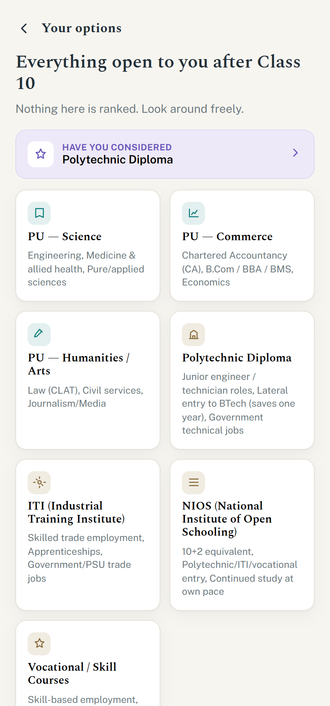

Marg AI
Guiding India's life choices. An AI-assisted roadmap that shows people every real option at a life crossroads and lets them choose for themselves.
- For
- A Class 10 student and their parent deciding what comes next. Persona packs extend the same engine to mid-career professionals and retirees.
- Problem
- Government touches every life stage but offers transactions, not decision support, so choices get made without guidance and schemes go unused.
- Key calls
- It never gives a verdict, always surfaces at least one option the user hadn't considered, and is honest about cost and effort. Data is private under DPDP consent.
- React + Vite
- Express
- Groq LLM
- Turso / libSQL
- PostHog